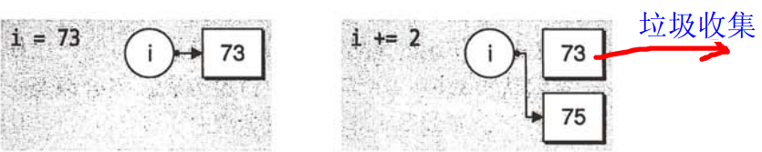

Python 函数
函数是组织好的，可重复使用的，用来实现单一，或相关联功能的代码段。
函数能提高应用的模块性，和代码的重复利用率。你已经知道Python提供了许多内建函数，比如print()。但你也可以自己创建函数，这被叫做用户自定义函数。
定义一个函数
你可以定义一个由自己想要功能的函数，以下是简单的规则：
- 函数代码块以 def 关键词开头，后接函数标识符名称和圆括号()。
- 任何传入参数和自变量必须放在圆括号中间。圆括号之间可以用于定义参数。
- 函数的第一行语句可以选择性地使用文档字符串—用于存放函数说明。
- 函数内容以冒号起始，并且缩进。
- return [表达式] 结束函数，选择性地返回一个值给调用方。不带表达式的return相当于返回 None。
语法
默认情况下，参数值和参数名称是按函数声明中定义的顺序匹配起来的。
实例
以下为一个简单的Python函数，它将一个字符串作为传入参数，再打印到标准显示设备上。
实例(Python 2.0+)
函数调用
定义一个函数只给了函数一个名称，指定了函数里包含的参数，和代码块结构。
这个函数的基本结构完成以后，你可以通过另一个函数调用执行，也可以直接从Python提示符执行。
如下实例调用了printme（）函数：
实例(Python 2.0+)
以上实例输出结果：
我要调用用户自定义函数! 再次调用同一函数
参数传递
在 python 中，类型属于对象，变量是没有类型的：
以上代码中，[1,2,3] 是 List 类型，"Runoob" 是 String 类型，而变量 a 是没有类型，她仅仅是一个对象的引用（一个指针），可以是 List 类型对象，也可以指向 String 类型对象。
可更改(mutable)与不可更改(immutable)对象
在 python 中，strings, tuples, 和 numbers 是不可更改的对象，而 list,dict 等则是可以修改的对象。
不可变类型：变量赋值 a=5 后再赋值 a=10，这里实际是新生成一个 int 值对象 10，再让 a 指向它，而 5 被丢弃，不是改变a的值，相当于新生成了a。
可变类型：变量赋值 la=[1,2,3,4] 后再赋值 la[2]=5 则是将 list la 的第三个元素值更改，本身la没有动，只是其内部的一部分值被修改了。
python 函数的参数传递：
不可变类型：类似 c++ 的值传递，如 整数、字符串、元组。如fun（a），传递的只是a的值，没有影响a对象本身。比如在 fun（a）内部修改 a 的值，只是修改另一个复制的对象，不会影响 a 本身。
可变类型：类似 c++ 的引用传递，如 列表，字典。如 fun（la），则是将 la 真正的传过去，修改后fun外部的la也会受影响
python 中一切都是对象，严格意义我们不能说值传递还是引用传递，我们应该说传不可变对象和传可变对象。
python 传不可变对象实例
实例(Python 2.0+)
实例中有 int 对象 2，指向它的变量是 b，在传递给 ChangeInt 函数时，按传值的方式复制了变量 b，a 和 b 都指向了同一个 Int 对象，在 a=10 时，则新生成一个 int 值对象 10，并让 a 指向它。
传可变对象实例
实例(Python 2.0+)
实例中传入函数的和在末尾添加新内容的对象用的是同一个引用，故输出结果如下：
函数内取值: [10, 20, 30, [1, 2, 3, 4]] 函数外取值: [10, 20, 30, [1, 2, 3, 4]]
参数
以下是调用函数时可使用的正式参数类型：
- 必备参数
- 关键字参数
- 默认参数
- 不定长参数
必备参数
必备参数须以正确的顺序传入函数。调用时的数量必须和声明时的一样。
调用printme()函数，你必须传入一个参数，不然会出现语法错误：
实例(Python 2.0+)
以上实例输出结果：
Traceback (most recent call last):
File "test.py", line 11, in <module>
printme()
TypeError: printme() takes exactly 1 argument (0 given)
关键字参数
关键字参数和函数调用关系紧密，函数调用使用关键字参数来确定传入的参数值。
使用关键字参数允许函数调用时参数的顺序与声明时不一致，因为 Python 解释器能够用参数名匹配参数值。
以下实例在函数 printme() 调用时使用参数名：
实例(Python 2.0+)
以上实例输出结果：
My string
下例能将关键字参数顺序不重要展示得更清楚：
实例(Python 2.0+)
以上实例输出结果：
Name: miki Age 50
默认参数
调用函数时，默认参数的值如果没有传入，则被认为是默认值。下例会打印默认的age，如果age没有被传入：
实例(Python 2.0+)
以上实例输出结果：
Name: miki Age 50 Name: miki Age 35
不定长参数
你可能需要一个函数能处理比当初声明时更多的参数。这些参数叫做不定长参数，和上述2种参数不同，声明时不会命名。基本语法如下：
加了星号（*）的变量名会存放所有未命名的变量参数。不定长参数实例如下：
实例(Python 2.0+)
以上实例输出结果：
输出: 10 输出: 70 60 50
匿名函数
python 使用 lambda 来创建匿名函数。
- lambda只是一个表达式，函数体比def简单很多。
- lambda的主体是一个表达式，而不是一个代码块。仅仅能在lambda表达式中封装有限的逻辑进去。
- lambda函数拥有自己的命名空间，且不能访问自有参数列表之外或全局命名空间里的参数。
- 虽然lambda函数看起来只能写一行，却不等同于C或C++的内联函数，后者的目的是调用小函数时不占用栈内存从而增加运行效率。
语法
lambda函数的语法只包含一个语句，如下：
lambda [arg1 [,arg2,.....argn]]:expression
如下实例：
实例(Python 2.0+)
以上实例输出结果：
相加后的值为 : 30 相加后的值为 : 40
return 语句
return语句[表达式]退出函数，选择性地向调用方返回一个表达式。不带参数值的return语句返回None。之前的例子都没有示范如何返回数值，下例便告诉你怎么做：
实例(Python 2.0+)
以上实例输出结果：
函数内 : 30
变量作用域
一个程序的所有的变量并不是在哪个位置都可以访问的。访问权限决定于这个变量是在哪里赋值的。
- 全局变量
- 局部变量
全局变量和局部变量
定义在函数内部的变量拥有一个局部作用域，定义在函数外的拥有全局作用域。
局部变量只能在其被声明的函数内部访问，而全局变量可以在整个程序范围内访问。调用函数时，所有在函数内声明的变量名称都将被加入到作用域中。如下实例：
实例(Python 2.0+)
以上实例输出结果：
函数内是局部变量 : 30 函数外是全局变量 : 0

bling coin
zha***nszg@126.com
#!/usr/bin/python # -*- coding: UTF-8 -*- globvar = 0 def set_globvar_to_one(): global globvar # 使用 global 声明全局变量 globvar = 1 def print_globvar(): print(globvar) # 没有使用 global set_globvar_to_one() print globvar # 输出 1 print_globvar() # 输出 1，函数内的 globvar 已经是全局变量1、global---将变量定义为全局变量。可以通过定义为全局变量，实现在函数内部改变变量值。
2、一个global语句可以同时定义多个变量，如 global x, y, z。
bling coin
zha***nszg@126.com
BMPixel
194***4370@qq.com
列表反转函数:
Python2 代码：
#!/user/bin/python # -*- coding: UTF-8 -*- def reverse(li): for i in range(0, len(li)/2): temp = li[i] li[i] = li[-i-1] li[-i-1] = temp l = [1, 2, 3, 4, 5] reverse(l) print(l)Python3 代码：
#!/user/bin/python3 def reverse(li): for i in range(0, len(li)//2): temp = li[i] li[i] = li[-i-1] li[-i-1] = temp l = [1, 2, 3, 4, 5] reverse(l) print(l)BMPixel
194***4370@qq.com
King
kin***63.com
列表反转函数二:
def reverse(ListInput): RevList=[] for i in range (len(ListInput)): RevList.append(ListInput.pop()) return RevListKing
kin***63.com
songy
son***010@live.cn
简化列表反转：
def reverse(li): for i in range(0, len(li)/2): # python3 下使用 len(li)//2 li[i], li[-i - 1] = li[-i - 1], li[i] l = [1, 2, 3, 4, 5] reverse(l) print(l)songy
son***010@live.cn
shiyeweimian
860***758@qq.com
参考地址
关于 return fun 和 return fun() 的区别：
>>> def funx(x): def funy(y): return x * y return funy #return funy返回的是一个对象，可理解为funx是funy的一个对象 >>> funx(7)(8) 56 >>> def funx(x): def funy(y): return x * y return funy() #return funy()返回的是funy的函数返回值，所以此处报错 >>> funx(7)(8) Traceback (most recent call last): File "<pyshell#5>", line 1, in <module> funx(7)(8) File "<pyshell#4>", line 4, in funx return funy() TypeError: funy() takes exactly 1 argument (0 given) >>> def funx(x): def funy(y): return x * y return funy(8) >>> funx(7) 56shiyeweimian
860***758@qq.com
参考地址
santiago
408***468@qq.com
在 python 中，类型属于对象，变量是没有类型的。
以上代码中，[1,2,3] 是 List 类型，"Runoob" 是 String 类型，而变量 a 是没有类型，她仅仅是一个对象的引用（一个指针），可以是 List 类型对象，也可以指向 String 类型对象。
santiago
408***468@qq.com
Sonnet
gra***nnet@qq.com
参考地址
DocStrings 文档字符串是一个重要工具，用于解释文档程序，帮助你的程序文档更加简单易懂。
#!/usr/bin/python # -*- coding: UTF-8 -*- def function(): ''' say something here！ ''' pass print (function.__doc__) # 调用 docDocStrings 文档字符串使用惯例：它的首行简述函数功能，第二行空行，第三行为函数的具体描述。
更多内容可参考：Python 文档字符串(DocStrings)
Sonnet
gra***nnet@qq.com
参考地址
天天学python
495***929@qq.com
#!/usr/bin/python # -*- coding: UTF-8 -*- def printme( str, int ): print str,int return # int, str 顺序和定义时的顺序不一样，最终输出按照 print 的顺序 printme(int=10, str = "My string")输出结果为：My string 10
以上是一个具体实例，可以帮助更好的理解：使用关键字参数允许函数调用时参数的顺序与声明时不一致，因为 Python 解释器能够用参数名匹配参数值。
天天学python
495***929@qq.com
销售
axi***n1989@qq.com
#!/usr/bin/python3 def arras(x,y,z=4,*param,**params): print(x,y,z) for i in range(len(param)): print(param[i]) for j in params: print(j+':'+params[j]) arras(1,2,3,4,5,'Python 风格规范(Google)本项目并非Google 官方项目,.。',foo='foo1=100',h00='hoo1=200',koo='koo1=4000')输出结果：
得出：不定长参数 * 输出一般都是元组的结构形式， ** 双星输出的都是字典形式的 结构，在传值的中也要确保值得准确匹配才行，不然会报错。
销售
axi***n1989@qq.com
sunird
118***9011@qq.com
函数的方法名也可以作为另一个函数的参数。
其中 add 方法在 add_twice 方法中作为一个参数被调用。
sunird
118***9011@qq.com
yefeidd
zjs***803757@qq.com
可以通过重新创建一个列表引用对象，来避免修改函数内部列表的同时影响到外部的对象。
yefeidd
zjs***803757@qq.com
hamilton
123***c.com
参考地址
关于本节可变/不可变对象传参的一点补充：
Python 在 heap 中分配的对象分成两类：可变对象和不可变对象。所谓可变对象是指，对象的内容是可变的，例如 list。而不可变的对象则相反，表示其内容不可变。
一、不可变对象
由于 Python 中的变量存放的是对象引用，所以对于不可变对象而言，尽管对象本身不可变，但变量的对象引用是可变的。运用这样的机制，有时候会让人产生糊涂，似乎可变对象变化了。如下面的代码：

从上面得知，不可变的对象的特征没有变，依然是不可变对象，变的只是创建了新对象，改变了变量的对象引用。
看看下面的代码，更能体现这点的。
二、对于可变对象
其对象的内容是可以变化的。当对象的内容发生变化时，变量的对象引用是不会变化的。如下面的例子。
hamilton
123***c.com
参考地址